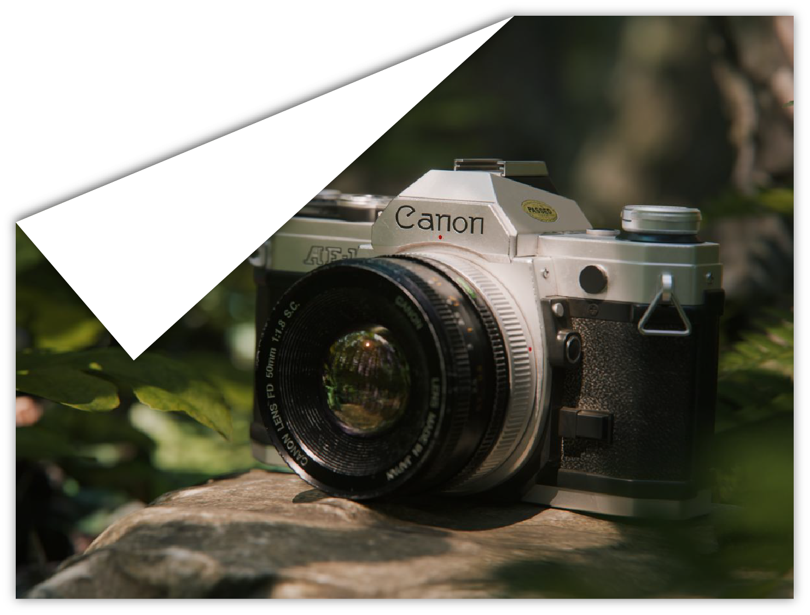
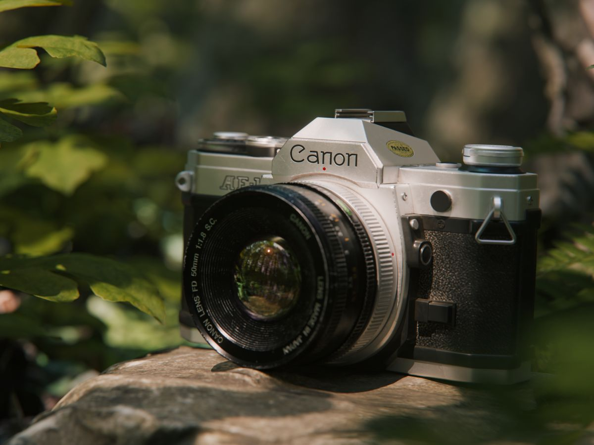
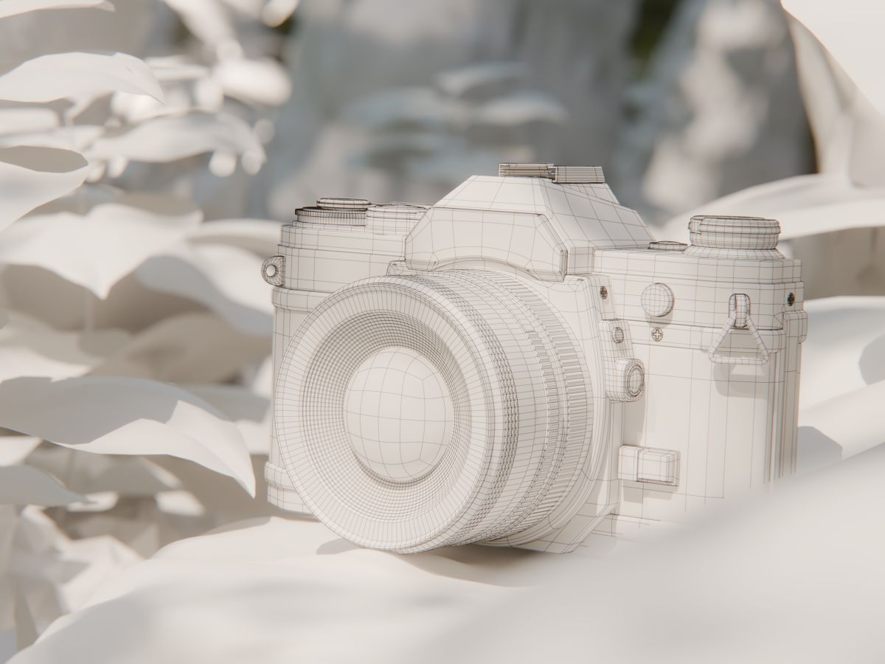

Diese Kamera habe ich ursprünglich für eine
größere Szene aus eine Projekt an der Hochschule modelliert. Da mir das Modell jedoch
sehr gut gefallen hat, wollte ich die Texturen
noch einmal anpassen und die Kamera mehr
hervorheben. Da ich hier ein schon existierendes Objekt nachgebildet habe, habe ich nah
an technischen Zeichnungen und Referenzbildern gearbeitet. Die Modelle habe ich in Blender größtenteils mit einem Subdivision-Workflow erstellt. Man soll der Kamera ansehen
können, dass sie schon alt ist und viel genutzt
wurde und das habe ich versucht in Substance Painter umzusetzen
Die Grafiken für die zahlreichen Beschriftungen wie Brennweiten oder Markennamen habe
ich selbst mit Adobe Illustrator gebaut. In Szene gesetzt habe ich die fertige Kamera dann
in Blender mit Assets aus der Plant Library von
BD3D sowie eigenen Photoscans.
2025
Blender, Substance Painter, Illustrator, Photoshop
Diese Kamera habe ich ursprünglich für eine
größere Szene aus eine Projekt an der Hochschule modelliert. Da mir das Modell jedoch
sehr gut gefallen hat, wollte ich die Texturen
noch einmal anpassen und die Kamera mehr
hervorheben. Da ich hier ein schon existierendes Objekt nachgebildet habe, habe ich nah
an technischen Zeichnungen und Referenzbildern gearbeitet. Die Modelle habe ich in Blender größtenteils mit einem Subdivision-Workflow erstellt. Man soll der Kamera ansehen
können, dass sie schon alt ist und viel genutzt
wurde und das habe ich versucht in Substance Painter umzusetzen
Die Grafiken für die zahlreichen Beschriftungen wie Brennweiten oder Markennamen habe
ich selbst mit Adobe Illustrator gebaut. In Szene gesetzt habe ich die fertige Kamera dann
in Blender mit Assets aus der Plant Library von
BD3D sowie eigenen Photoscans.

Render Canon AE-1 mit Textur

Wireframe Canon AE-1